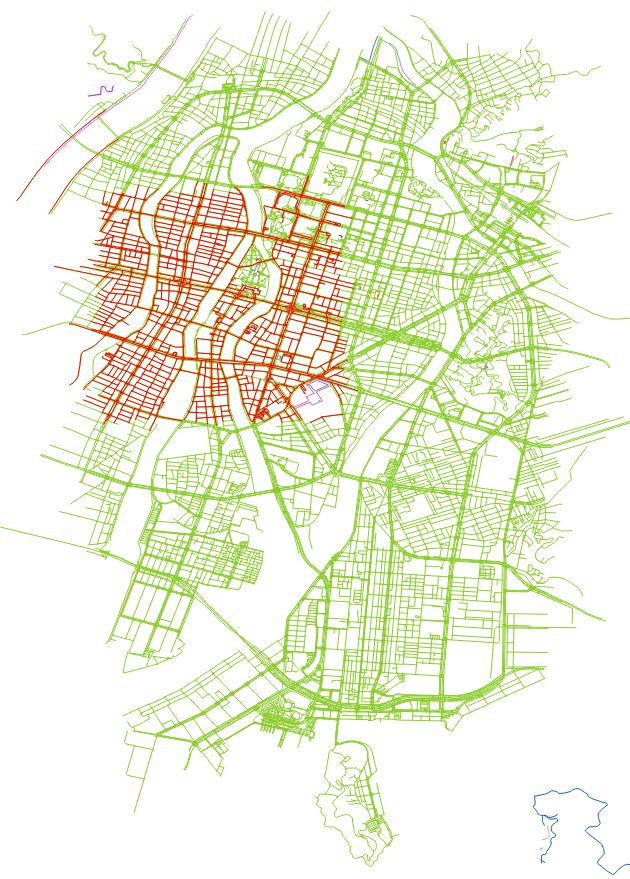
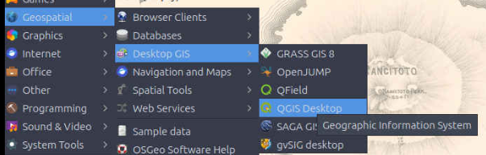
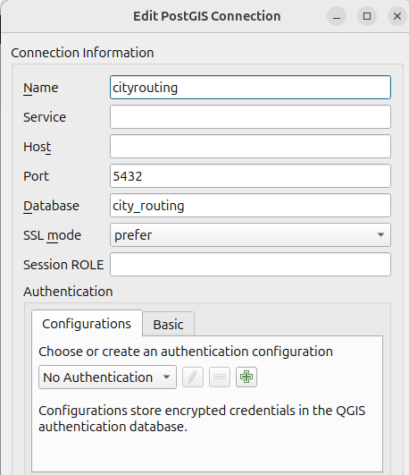
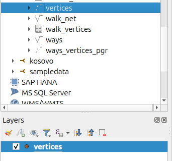
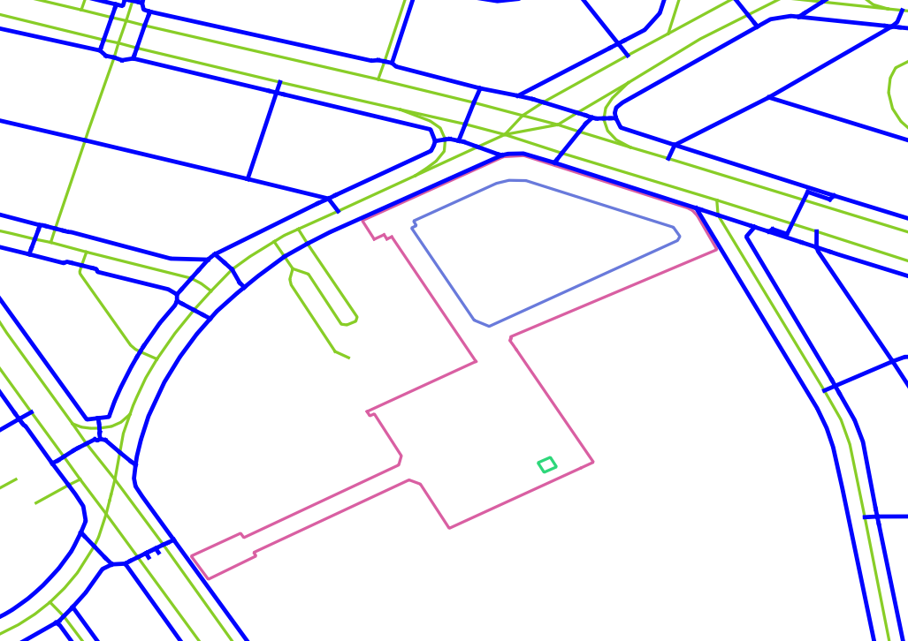
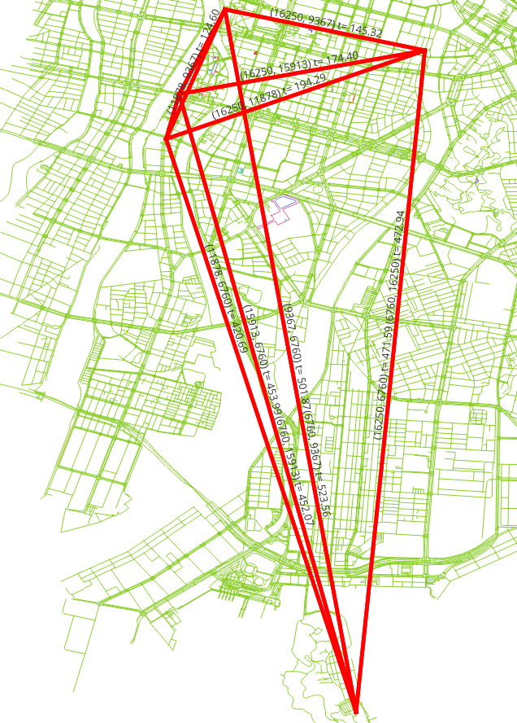

2. グラフ¶
{kind=link}

アプリケーションによって必要となるグラフは異なります。この章では、非連結なセグメントを取り除く方法と、グラフを作成するさまざまなアプローチについて説明します。
この章で扱う pgRouting 関数
2.1. グラフの要件¶
この章では、ways から派生した3つの異なるルート検索グラフを作成する必要があります。これらは2つの車両専用グラフと1つの歩行者グラフから構成され、いずれもルート検索の経路の決定に標準の source と target を利用します。
各グラフの説明:
特定車両:
広島エリア全体を走行できます。
pedestrian、steps、footway、path、cycleway は使用しません
速度は OSM 情報のデフォルト速度です。
タクシー車両:
より狭いエリアを走行します:
バウンディングボックス:
(132.439,34.38, 132.46,34.40)pedestrian、steps、footway、path、cycleway は使用しません
速度は特定車両より 10% 遅くなります。
歩行者:
広島エリア全体を歩行できます。
歩行者専用の道路のみ使用できます:
pedestrian、steps、footway、path、cycleway、residential
歩行速度は
2 mts/secです。
2.2. osm2pgrouting による設定 (configuration)¶
データを扱う際は、どのような種類のデータが使われているかを把握することで、結果を改善できます。
車両は歩行者用の道路を走行できません

osm2pgrouting ツールを使って OSM 形式のデータを変換すると、configuration という追加のテーブルが作成されます。
configuration テーブルの構造は、次のコマンドで取得できます。
\dS+ configuration
Table "public.configuration"
Column | Type | Collation | Nullable | Default | Storage | Compression | Stats target | Description
-------------------+------------------+-----------+----------+-------------------------------------------+----------+-------------+--------------+-------------
id | integer | | not null | nextval('configuration_id_seq'::regclass) | plain | | |
tag_id | integer | | | | plain | | |
tag_key | text | | | | extended | | |
tag_value | text | | | | extended | | |
priority | double precision | | | | plain | | |
maxspeed | double precision | | | | plain | | |
maxspeed_forward | double precision | | | | plain | | |
maxspeed_backward | double precision | | | | plain | | |
force | character(1) | | | | extended | | |
Indexes:
"configuration_pkey" PRIMARY KEY, btree (id)
"configuration_tag_id_key" UNIQUE CONSTRAINT, btree (tag_id)
Referenced by:
TABLE "ways" CONSTRAINT "ways_tag_id_fkey" FOREIGN KEY (tag_id) REFERENCES configuration(tag_id)
Access method: heap
Options: autovacuum_enabled=false
上の画像には、道路の tag_id の詳細が示されています。
OSM highway の種類:
SELECT tag_id, tag_key, tag_value
FROM configuration
ORDER BY tag_id;
tag_id | tag_key | tag_value
--------+-----------+-------------------
100 | highway | road
101 | highway | motorway
102 | highway | motorway_link
103 | highway | motorway_junction
104 | highway | trunk
105 | highway | trunk_link
106 | highway | primary
107 | highway | primary_link
108 | highway | secondary
109 | highway | tertiary
110 | highway | residential
111 | highway | living_street
112 | highway | service
113 | highway | track
114 | highway | pedestrian
115 | highway | services
116 | highway | bus_guideway
117 | highway | path
118 | highway | cycleway
119 | highway | footway
120 | highway | bridleway
121 | highway | byway
122 | highway | steps
123 | highway | unclassified
124 | highway | secondary_link
125 | highway | tertiary_link
201 | cycleway | lane
202 | cycleway | track
203 | cycleway | opposite_lane
204 | cycleway | opposite
301 | tracktype | grade1
302 | tracktype | grade2
303 | tracktype | grade3
304 | tracktype | grade4
305 | tracktype | grade5
401 | junction | roundabout
(36 rows)
また、ways テーブルには、configuration テーブルと JOIN するために使用できる列があります。
広島データにおける configuration の種類
SELECT DISTINCT tag_id, tag_key, tag_value
FROM ways JOIN configuration USING (tag_id)
ORDER BY tag_id;
tag_id | tag_key | tag_value
--------+----------+---------------
101 | highway | motorway
102 | highway | motorway_link
104 | highway | trunk
105 | highway | trunk_link
106 | highway | primary
107 | highway | primary_link
108 | highway | secondary
109 | highway | tertiary
110 | highway | residential
112 | highway | service
113 | highway | track
114 | highway | pedestrian
117 | highway | path
118 | highway | cycleway
119 | highway | footway
122 | highway | steps
123 | highway | unclassified
125 | highway | tertiary_link
201 | cycleway | lane
202 | cycleway | track
(20 rows)
2.3. pgr_extractVertices¶
pgr_extractVertices は、グラフのエッジ集合から頂点情報を抽出します。
シグネチャの概要
pgr_extractVertices(Edges SQL, [dryrun])
RETURNS SETOF (id, in_edges, out_edges, x, y, geom)
OR EMPTY SET
関数の説明は pgr_extractVertices にあります。
2.3.1. 演習 1: 頂点テーブルの作成¶
課題
ways のエッジに対応する頂点テーブルを作成します。
解答
グラフは、頂点の集合とエッジの集合から構成されます。
この場合、
waysテーブルがエッジの集合です。pgRouting のすべてのグラフ関数を利用するには、頂点の集合が定義されている必要があります。
要件から、完全に連結したグラフが必要となるため、
component列を追加します。
SELECT id, in_edges, out_edges, x, y, NULL::BIGINT osm_id, NULL::BIGINT component, geom
INTO vertices
FROM pgr_extractVertices('SELECT id, source, target FROM ways ORDER BY id');
SELECT 22889
頂点テーブルの定義を確認する
\dS+ vertices
Table "public.vertices"
Column | Type | Collation | Nullable | Default | Storage | Compression | Stats target | Description
-----------+------------------+-----------+----------+---------+----------+-------------+--------------+-------------
id | bigint | | | | plain | | |
in_edges | bigint[] | | | | extended | | |
out_edges | bigint[] | | | | extended | | |
x | double precision | | | | plain | | |
y | double precision | | | | plain | | |
osm_id | bigint | | | | plain | | |
component | bigint | | | | plain | | |
geom | geometry | | | | main | | |
Access method: heap
頂点テーブルの情報を確認する
SELECT * FROM vertices Limit 10;
id | in_edges | out_edges | x | y | osm_id | component | geom
-------+---------------+---------------+---+---+--------+-----------+------
4617 | {6168,6169} | {502,6920} | | | | |
790 | {941} | {940,19347} | | | | |
7190 | {9445,9446} | {374,9442} | | | | |
7738 | {10121,10122} | {193,10120} | | | | |
5642 | {7526,7527} | {168,7529} | | | | |
7864 | {10275,10276} | {962,6670} | | | | |
8230 | {10718,10719} | {763,10721} | | | | |
51 | {51,24830} | {558,689,693} | | | | |
12099 | {15569,15570} | {342,15542} | | | | |
839 | {1009} | {144} | | | | |
(10 rows)
2.3.2. 演習 2: 頂点テーブルの他の列を埋める¶
課題
頂点テーブルにジオメトリ情報を埋めます。
解答
埋める必要がある行数を数えます。
SELECT count(*) FROM vertices WHERE geom IS NULL;
count
-------
22889
(1 row)
geom 列と osm_id 列を更新する
更新は、
waysテーブルのsource列と頂点テーブルのid列に基づいて行います。geom列を更新するには、waysテーブルのジオメトリの始点を使用します。osm_id列を埋めるには、source_osmの値を使用します。
WITH
get_data AS (
SELECT source, source_osm, ST_startPoint(geom) AS pt FROM ways
UNION ALL
SELECT target, target_osm, ST_endPoint(geom) FROM ways
)
UPDATE vertices SET
(geom, osm_id, x, y) = (ST_startPoint(pt), source_osm, st_x(pt), st_y(pt))
FROM get_data WHERE source = id;
検証
UPDATE 22889
count
-------
0
(1 row)
2.3.3. 演習 3: QGIS を使って作業結果を表示する¶
QGIS は強力なツールです
OSGeoLive を使用している場合、QGIS は次の場所にあります:
{kind=link}

QGIS を開き、city_routing にアクセスするための Postgres の認証情報を追加します
{kind=link}

頂点テーブルを選択し、レイヤに追加します
{kind=link}

キャンバス上に、次のような表示が現れます:

2.4. pgr_connectedComponents¶
pgr_connectedComponents は、深さ優先探索 (Depth First Search) を用いて無向グラフの連結成分を計算します。無向グラフの連結成分とは、互いにすべて到達可能な頂点の集合です。
シグネチャの概要
pgr_connectedComponents(edges_sql)
RETURNS SET OF (seq, component, node)
OR EMPTY SET
関数の説明は pgr_connectedComponents にあります。
2.4.1. 演習 4: エッジテーブルと頂点テーブルに連結成分を設定する¶
課題
グラフの連結成分に関する情報を取得します。
解答
エッジテーブルに追加の列を作成します。
ALTER TABLE ways ADD COLUMN component BIGINT;
ALTER TABLE
pgr_connectedComponents を使って頂点テーブルを埋めます。
その結果を使って、連結成分の番号を頂点テーブルに保存します。
UPDATE vertices AS v SET component = c.component
FROM (
SELECT seq, component, node
FROM pgr_connectedComponents('SELECT id, source, target, cost, reverse_cost FROM ways')
) AS c
WHERE v.id = c.node;
UPDATE 22889

注釈
これは QGIS のワークショップではないため、レイヤの表示方法の詳細はこのワークショップには記載しません
頂点の連結成分番号に基づいてエッジテーブルを更新します
UPDATE ways SET component = v.component
FROM (SELECT id, component FROM vertices) AS v
WHERE source = v.id;
UPDATE 32163
{kind=link}
2.4.2. 演習 5: 連結成分を調べる¶
課題
次の質問に答えてください:
頂点テーブルにはいくつの連結成分がありますか?
エッジテーブルにはいくつの連結成分がありますか?
エッジ数の多い連結成分を上位10個列挙します。
エッジ数が最大の連結成分を取得します。
解答
1. How many components are in the vertices table?
異なる連結成分の数を数えます。
SELECT count(DISTINCT component) FROM vertices;
count
-------
51
(1 row)
2. How many components are in the edges table?
異なる連結成分の数を数えます。
SELECT count(DISTINCT component) FROM ways;
count
-------
51
(1 row)
3. List the 10 components with more edges.
連結成分ごとにグループ化して行数を数えます。(line 1)
上位10個を表示するために降順に並べ替えます。(line 2)
SELECT component, count(*) FROM ways GROUP BY component
ORDER BY count DESC LIMIT 10;
component | count
-----------+-------
1 | 32014
1515 | 20
20757 | 18
14412 | 8
12888 | 8
14399 | 8
17828 | 8
4296 | 8
21656 | 7
2917 | 7
(10 rows)
4. Get the component with the maximum number of edges.
前の質問のクエリを使って最大数を取得します
最大値に一致する連結成分を取得します。
WITH
all_components AS (SELECT component, count(*) FROM ways GROUP BY component),
max_component AS (SELECT max(count) FROM all_components)
SELECT component FROM all_components WHERE count = (SELECT max FROM max_component);
component
-----------
1
(1 row)
2.5. グラフの準備¶
2.5.1. 演習 6: 車両のルート検索用のビューを作成する¶

課題
特定車両を処理するために必要最小限の情報を持つビューを作成します。
ルート検索の計算のための
costとreverse_costは秒単位とします。pedestrian、steps、footway、path、cyclewayのセグメントを除外します。以降の処理のためにビューに必要なデータです。
セグメントの
id。セグメントの
sourceとtarget。nameセグメントの名称。lengthメートル単位の長さ。length_mから名称変更します。geomジオメトリ。tag_id道路の種類。
エッジ数が減少したことを確認します。
解答
ビューを作成する:
ビューを再作成する必要がある場合は、まず1行目のコマンドで削除します。
エッジ数が最大の連結成分を取得します。
必要な列を選択します。-
costとreverse_costは秒単位です。-length_mは名称変更します。configuration と
JOINします:pedestrian、steps、footway、path、cyclewayを除外します。
1-- DROP VIEW vehicle_net CASCADE;
2
3CREATE OR REPLACE VIEW vehicle_net AS
4
5WITH
6all_components AS (SELECT component, count(*) FROM ways GROUP BY component),
7max_component AS (SELECT max(count) FROM all_components),
8the_component AS (
9 SELECT component FROM all_components
10 WHERE count = (SELECT max FROM max_component))
11
12SELECT
13 w.id, source, target,
14 cost_s AS cost, reverse_cost_s AS reverse_cost,
15 name, length_m AS length, tag_id, geom AS geom
16FROM ways w JOIN the_component USING (component) JOIN configuration USING (tag_id)
17WHERE tag_value NOT IN ('pedestrian', 'steps','footway','path','cycleway');
CREATE VIEW
検証
元の ways と vehicle_net の行数を数えます。
SELECT count(*) FROM ways;
SELECT count(*) FROM vehicle_net;
count
-------
32163
(1 row)
count
-------
13833
(1 row)
ビューの定義を取得します
\dS+ vehicle_net
View "public.vehicle_net"
Column | Type | Collation | Nullable | Default | Storage | Description
--------------+---------------------------+-----------+----------+---------+----------+-------------
id | bigint | | | | plain |
source | bigint | | | | plain |
target | bigint | | | | plain |
cost | double precision | | | | plain |
reverse_cost | double precision | | | | plain |
name | text | | | | extended |
length | double precision | | | | plain |
tag_id | integer | | | | plain |
geom | geometry(LineString,4326) | | | | main |
View definition:
WITH all_components AS (
SELECT ways.component,
count(*) AS count
FROM ways
GROUP BY ways.component
), max_component AS (
SELECT max(all_components.count) AS max
FROM all_components
), the_component AS (
SELECT all_components.component
FROM all_components
WHERE all_components.count = (( SELECT max_component.max
FROM max_component))
)
SELECT w.id,
w.source,
w.target,
w.cost_s AS cost,
w.reverse_cost_s AS reverse_cost,
w.name,
w.length_m AS length,
w.tag_id,
w.geom
FROM ways w
JOIN the_component USING (component)
JOIN configuration USING (tag_id)
WHERE configuration.tag_value <> ALL (ARRAY['pedestrian'::text, 'steps'::text, 'footway'::text, 'path'::text, 'cycleway'::text]);
2.5.2. 演習 7: 歩行者のルート検索用のマテリアライズドビューを作成する¶
{kind=link}

課題
歩行者のルート検索を処理するために必要最小限の情報を持つマテリアライズドビューを作成します。
ルート検索の計算のための
costとreverse_costは秒単位とします。歩行速度は
2 mts/secです。
歩行者用の道路
pedestrian、steps、footway、path、cyclewayおよびresidentialの道路を含めます。以降の処理のためにビューに必要なデータです。
セグメントの
id。セグメントの
sourceとtarget。nameセグメントの名称。lengthメートル単位の長さ。length_mから名称変更します。geomジオメトリ。tag_id道路の種類。
エッジ数が減少したことを確認します。
解答
ビューを作成する:
ビューを再作成する必要がある場合は、まず1行目のコマンドで削除します。
エッジ数が最大の連結成分を取得します。
必要な列を選択します。
costとreverse_costは、2 mts/secの速度による秒単位です。length_mは名称変更します。
configuration と
JOINします:residential、pedestrian、steps、footway、path、cyclewayを含めます。
1-- DROP MATERIALIZED VIEW walk_net CASCADE;
2
3CREATE MATERIALIZED VIEW walk_net AS
4
5WITH
6all_components AS (SELECT component, count(*) FROM ways GROUP BY component),
7max_component AS (SELECT max(count) FROM all_components),
8the_component AS (
9 SELECT component FROM all_components
10 WHERE count = (SELECT max FROM max_component))
11
12SELECT
13 w.id, source, target,
14 length_m / 2.0 AS cost, length_m / 2.0 AS reverse_cost,
15 name, length_m AS length, geom
16FROM ways w JOIN the_component USING (component) JOIN configuration USING (tag_id)
17WHERE tag_value IN ('residential','pedestrian', 'steps','footway','path','cycleway');
SELECT 24174
ビュー walk_net の行数を数えます。
SELECT count(*) FROM walk_net;
count
-------
24174
(1 row)
定義を取得します。
\dS+ walk_net
Materialized view "public.walk_net"
Column | Type | Collation | Nullable | Default | Storage | Compression | Stats target | Description
--------------+---------------------------+-----------+----------+---------+----------+-------------+--------------+-------------
id | bigint | | | | plain | | |
source | bigint | | | | plain | | |
target | bigint | | | | plain | | |
cost | double precision | | | | plain | | |
reverse_cost | double precision | | | | plain | | |
name | text | | | | extended | | |
length | double precision | | | | plain | | |
geom | geometry(LineString,4326) | | | | main | | |
View definition:
WITH all_components AS (
SELECT ways.component,
count(*) AS count
FROM ways
GROUP BY ways.component
), max_component AS (
SELECT max(all_components.count) AS max
FROM all_components
), the_component AS (
SELECT all_components.component
FROM all_components
WHERE all_components.count = (( SELECT max_component.max
FROM max_component))
)
SELECT w.id,
w.source,
w.target,
w.length_m / 2.0::double precision AS cost,
w.length_m / 2.0::double precision AS reverse_cost,
w.name,
w.length_m AS length,
w.geom
FROM ways w
JOIN the_component USING (component)
JOIN configuration USING (tag_id)
WHERE configuration.tag_value = ANY (ARRAY['residential'::text, 'pedestrian'::text, 'steps'::text, 'footway'::text, 'path'::text, 'cycleway'::text]);
Access method: heap
2.5.3. 演習 8: 道路ネットワークをエリア内に制限する¶
課題
taxi 用のビュー
taxi_netを作成します:タクシーはこのバウンディングボックス内のみ走行できます:
(132.439,34.38, 132.46,34.40)タクシーの速度は特定車両より 10% 遅くなります。
ビューは
vehicle_netを基にします
道路セグメント数が減少したことを確認します。
解答
ビューを作成する:
タクシーの
costとreverse_costを、特定車両より 10% 遅くなるように調整します。タクシー用のグラフは、
vehicle_netグラフの部分集合です。バウンディングボックス内のみ走行できます:
(132.439,34.38, 132.46,34.40)。
-- DROP VIEW taxi_net;
CREATE OR REPLACE VIEW taxi_net AS
SELECT
id,
source, target,
cost * 1.10 AS cost, reverse_cost * 1.10 AS reverse_cost,
name, length, tag_id, geom
FROM vehicle_net
WHERE vehicle_net.geom && ST_MakeEnvelope(132.439,34.38, 132.46,34.40);
CREATE VIEW
taxi_net の行数を数えます。
SELECT count(*) FROM taxi_net;
count
-------
2887
(1 row)
定義を取得します。
\dS+ taxi_net
View "public.taxi_net"
Column | Type | Collation | Nullable | Default | Storage | Description
--------------+---------------------------+-----------+----------+---------+----------+-------------
id | bigint | | | | plain |
source | bigint | | | | plain |
target | bigint | | | | plain |
cost | double precision | | | | plain |
reverse_cost | double precision | | | | plain |
name | text | | | | extended |
length | double precision | | | | plain |
tag_id | integer | | | | plain |
geom | geometry(LineString,4326) | | | | main |
View definition:
SELECT id,
source,
target,
cost * 1.10::double precision AS cost,
reverse_cost * 1.10::double precision AS reverse_cost,
name,
length,
tag_id,
geom
FROM vehicle_net
WHERE geom && st_makeenvelope(132.439::double precision, 34.38::double precision, 132.46::double precision, 34.40::double precision);
2.6. pgr_dijkstraCostMatrix¶
pgr_dijkstraCostMatrix は、ダイクストラ法を用いてコスト行列を計算します。
シグネチャの概要
pgr_dijkstraCostMatrix(Edges SQL, start vids, [directed])
RETURNS SETOF (start_vid, end_vid, agg_cost)
OR EMPTY SET
関数の説明は pgr_dijkstraCostMatrix にあります。
2.6.1. 演習 9: ビューをテストする¶
{kind=link}

課題
作成したビューをテストします
具体的には:
次のすべての
idから、すべてのidへの移動コスト行列を秒単位で取得します7508、4128、4632、2110、1688。テスト対象のビューは次のとおりです:
vehicle_nettaxi_netwalk_net
解答
地点は次のとおりです:
7508、4128、4632、2110、1688。配列として関数に渡します。
vehicle_net の場合:
vehicle_netを使用します。対応する名前の列を選択します。
ビューは、pgRouting が使用する列名で用意されています。
列の名称変更は不要です。
1SELECT start_vid, end_vid, agg_cost
2FROM pgr_dijkstraCostMatrix(
3 'SELECT * FROM vehicle_net',
4 ARRAY[7508, 4128, 4632, 2110, 1688]);
start_vid | end_vid | agg_cost
-----------+---------+--------------------
1688 | 2110 | 471.58941058573396
1688 | 4128 | 145.32105446646588
1688 | 4632 | 194.29049827463504
1688 | 7508 | 174.397569126339
2110 | 1688 | 472.9355119940073
2110 | 4128 | 523.5622332310817
2110 | 4632 | 418.1289839373456
2110 | 7508 | 452.0690222915526
4128 | 1688 | 131.35809090927174
4128 | 2110 | 501.87037392493926
4128 | 4632 | 129.51701556306938
4128 | 7508 | 93.94070340081566
4632 | 1688 | 192.90755480461337
4632 | 2110 | 420.68952429976497
4632 | 4128 | 124.5983137364605
4632 | 7508 | 33.94003835420694
7508 | 1688 | 173.01462565631726
7508 | 2110 | 453.985930672805
7508 | 4128 | 90.65827538225359
7508 | 4632 | 36.48159915882339
(20 rows)
taxi_net の場合:
前のものと同様ですが、
taxi_netを使用します。結果は
vehicle_netと同じ経路になりますが、costはより高くなります。すべての地点がエリア内にあるわけではないため、すべてが計算されるわけではありません。
1SELECT start_vid, end_vid, agg_cost
2FROM pgr_dijkstraCostMatrix(
3 'SELECT * FROM taxi_net',
4 ARRAY[7508, 4128, 4632, 2110, 1688]);
start_vid | end_vid | agg_cost
-----------+---------+--------------------
4128 | 4632 | 142.46871711937632
4128 | 7508 | 103.33477374089722
4632 | 4128 | 137.05814511010655
4632 | 7508 | 37.33404218962764
7508 | 4128 | 99.72410292047894
7508 | 4632 | 40.129759074705746
(6 rows)
walk_net の場合:
前のものと同様ですが、
walk_netを使用します。
1SELECT start_vid, end_vid, agg_cost
2FROM pgr_dijkstraCostMatrix(
3 'SELECT * FROM walk_net',
4 ARRAY[7508, 4128, 4632, 2110, 1688]);
start_vid | end_vid | agg_cost
-----------+---------+--------------------
1688 | 4128 | 974.1134663922404
1688 | 4632 | 1513.416531919412
1688 | 7508 | 1349.901812330015
4128 | 1688 | 974.1134663922404
4128 | 4632 | 750.3093736062607
4128 | 7508 | 508.0350537526043
4632 | 1688 | 1513.4165319194121
4632 | 4128 | 750.309373606261
4632 | 7508 | 242.27431985365666
7508 | 1688 | 1349.901812330015
7508 | 4128 | 508.03505375260454
7508 | 4632 | 242.27431985365664
(12 rows)
2.6.2. 演習 10: pgr_costMatrix の結果を QGIS で可視化する¶
課題
Exercise 9: Testing the views のクエリを基に、QGIS で使用できるビューを作成します。(上記のようなもの)
vehile_netを使用した場合の結果を例として示します。その他の結果は読者に委ねます。
解答
QGIS には一意の識別子が必要であり、その識別子は行番号とします。
点のジオメトリを取得するために
verticesテーブルとJOINします。2点を結ぶ
LINESTRINGを作成します。線の名前は、関数の結果の値から構成されます。
1CREATE OR REPLACE VIEW vehicle_costmatrix AS
2SELECT
3row_number() over() AS id,
4ST_makeline(v1.geom, v2.geom) AS geom,
5'('||start_vid||', '||end_vid||') t= ' || round(agg_cost::NUMERIC, 2) AS name
6FROM pgr_dijkstraCostMatrix(
7 'SELECT * FROM vehicle_net',
8 ARRAY[7508, 4128, 4632, 2110, 1688])
9JOIN vertices v1 ON (start_vid=v1.id)
10JOIN vertices v2 ON (end_vid=v2.id);
QGIS を開き、データベースを更新して、ビューをレイヤに追加します。線に名前を付けて書式設定します。